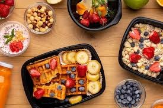
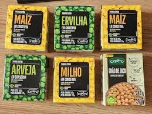

conhecendo os alimentos: do natural ao industrializados
Alimentos processados são produtos fabricados pela indústria com a adição de sal, açúcar, óleo ou vinagre a alimentos in natura (frescos) para aumentar sua durabilidade, sabor ou textura. Exemplos comuns incluem conservas (sardinha, milho), queijos, pães artesanais e frutas em calda, geralmente contendo poucos ingredientes e ainda reconhecíveis.
1 queijo 2pão 3conserva 4sardinha 5 frutas em calda

